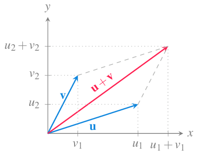

10 Geometría vectorial del plano y del espacio reales
\[ \newcommand{\mathbb{N}}{\mathbb{N}} \newcommand{\mathbb{Z}}{\mathbb{Z}} \newcommand{\mathbb{Q}}{\mathbb{Q}} \newcommand{\mathbb{R}}{\mathbb{R}} \newcommand{\mathbb{C}}{\mathbb{C}} \DeclareMathOperator{\Int}{Int} \DeclareMathOperator{\Ext}{Ext} \DeclareMathOperator{\Fr}{Fr} \DeclareMathOperator{\Adh}{Adh} \DeclareMathOperator{\Ac}{Ac} \DeclareMathOperator{\sen}{sen} \]
Para proceder al estudio analítico de las funciones de varias variables y de las funciones vectoriales se necesita introducir el concepto de vector y algunas propiedades geométricas del plano euclídeo \(\mathbb{R}^2\) y del espacio euclídeo \(\mathbb{R}^3\). Muchas de estas propiedades se pueden generalizar fácilmente a espacios de cualquier dimensión. En este capítulo introducimos estos los conceptos básicos de geometría vectorial necesarios para los próximos capítulos.
10.1 Escalares y vectores
10.1.1 Escalares
Algunos fenómenos de la naturaleza pueden describirse mediante un número referido a una unidad de medida.
Definición 10.1 (Escalar) Un escalar es un número que sirve para expresar una magnitud sin dirección.
Ejemplo 10.1 La estatura o el peso de una persona, el volumen de un depósito, la temperatura de un gas, el trabajo realizado por una fuerza sobre un objeto, la carga eléctrica o el tiempo que tarda un móvil en recorrer una distancia, son escalares.
Sin embargo, existen otros fenómenos que no pueden describirse adecuadamente mediante un escalar. Si, por ejemplo, un navegante quiere poner rumbo a puerto y sólo conoce de la intensidad del viento, no sabrá qué dirección tomar. La descripción del viento requiere dos elementos, su intensidad y su dirección.
10.1.2 Vectores
Definición 10.2 (Vector) Un vector es un objeto geométrico que tiene asociada una magnitud o longitud y una dirección. El vector con longitud 0 se conoce como vector nulo, se representa \(\mathbf{O}\) y es el único vector que no tiene dirección.
Ejemplo 10.2 La velocidad y la aceleración de un móvil o la fuerza que se aplica sobre un objeto, son vectores.
Geométricamente, en un espacio euclídeo, un vector se representa mediante un segmento orientado, es decir, una flecha.

10.1.3 Representación de un vector
Un segmento orientado puede ubicarse en diferentes lugares dentro de un espacio euclídeo. Sin embargo, con independencia de donde esté situado, si la longitud y la dirección no varían, dicho segmento representará siempre el mismo vector.
Esto permite representar todos los vectores con un mismo origen, el origen en sistema de coordenadas cartesianas. Así, en cualquier espacio euclídeo, un vector queda determinado por las coordenadas del punto que determina su extremo final.

10.1.4 Vector a partir de dos puntos
Dados dos puntos \(P\) y \(Q\) de un espacio euclídeo, el vector con origen en \(P\) y final en \(Q\) tiene coordenadas \(\vec{PQ}=Q-P\).
Ejemplo 10.3 Sean los puntos \(P=(1,1)\) y \(Q=(3,4)\) del plano real \(\mathbb{R}^2\), entonces
\[\vec{PQ} = Q-P = (3,4)-(1,1) = (3-1,4-1) = (2,3).\]

10.1.5 Módulo de un vector
Definición 10.3 (Módulo de un vector) Dado un vector \(\mathbf{v}=(v_1,\cdots,v_n)\) en \(\mathbb{R}^n\), se define el módulo de \(\mathbf{v}\) como
\[ \lvert \mathbf{v} \rvert = \sqrt{v_1^2+ \cdots + v_n^2}. \]
Proposición 10.1 El módulo de un vector coincide con la longitud del segmento que representa el vector.
Prueba. Probaremos primero la proposición para el plano real \(\mathbb{R}^2\). Supongamos que el vector tiene componentes \(\mathbf{v}=(v_1,v_2)\). En este caso, tal y como se puede apreciar en la siguiente figura, el vector es la hipotenusa del triángulo rectángulo con catetos de longitud \(v_1\) y \(v2\).

Por tanto, aplicando el teorema de Pitágoras, se tiene que la longitud de \(\mathbf{v}\) es
\[ \sqrt{(v_1^2+v_2^2} = |\mathbf{v}|. \]
Veamos ahora que también es cierto en el espacio real \(\mathbb{R}^3\). Supongamos que el vector tiene componentes \(\mathbf{v}=(v_1,v_2,v_3)\). En este caso, tal y como se puede apreciar en la siguiente figura, el vector es la hipotenusa del triángulo rectángulo con catetos de longitud \(|\mathbf{w}|\) y \(v3\), donde \(\mathbf{w}\) es el vector que resulta de proyectar \(\mathbf{v}\) sobre el plano \(xy\), es decir, \(\mathbf{w}=(v_1,v_2)\).

Como hemos visto para el plano real, se cumple que \(|\mathbf{w}| = \sqrt{v_1^2+v_2^2}\), y aplicando de nuevo el teorema de Pitágoras, se tiene que la longitud de \(\mathbf{v}\) es
\[ \sqrt{|\mathbf{w}|^2+v_3^2} = \sqrt{v_1^2+v_2^2+v_3^2} = |\mathbf{v}|. \]
El caso general para el espacio \(\mathbb{R}^n\) puede probarse fácilmente por inducción y se deja como ejercicio.
Ejemplo 10.4 Sea \(\mathbf{u}=(3,4)\) un vector en \(\mathbb{R}^2\), entonces
\[ \lvert \mathbf{u} \rvert = \sqrt{3^2+4^2} = \sqrt{25} = 5. \]
Sea \(\lvert \mathbf{v}\rvert =(4,7,4)\) un vector en \(\mathbb{R}^3\), entonces
\[ \lvert \mathbf{v} \vert = \sqrt{4^2+7^2+4^2} = \sqrt{81} = 9. \]
10.1.6 Vectores unitarios
Definición 10.4 (Vector unitario) Se dice que un vector \(\mathbf{v}\) en \(\mathbb{R}^n\) es unitario si su módulo es 1, es decir \(\lvert \mathbf{v}\rvert=1\).
Especial atención merecen los vectores unitarios que siguen la dirección de los ejes de coordenadas, estos vectores se llaman vectores coordenados.
En \(\mathbb{R}^2\) los vectores coordenados son
\[\mathbf{i}=(1,0)\mbox{ y }\mathbf{j}=(0,1)\]

En \(\mathbb{R}^3\) los vectores coordenados son
\[\mathbf{i}=(1,0,0)\mbox{, }\mathbf{j}=(0,1,0) \mbox{ y } \mathbf{k}=(0,0,1)\]

10.1.7 Suma de vectores
Definición 10.5 (Suma de vectores) Dados dos vectores \(\mathbf{u}=(u_1,\cdots,u_n)\) y \(\mathbf{v}=(v_1,\cdots,v_n)\) en \(\mathbb{R}^n\), se define la suma de \(\mathbf{u}\) y \(\mathbf{v}\) como
\[ \mathbf{u}+\mathbf{v} = (u_1+v_1,\ldots, u_n+v_n). \]

Ejemplo 10.5 Sean \(\mathbf{u}=(3,1)\) y \(\mathbf{v}=(2,3)\) dos vectores en \(\mathbb{R}^2\), entonces
\[ \mathbf{u}+\mathbf{v} = (3+2,1+3) = (5,4). \]
10.1.8 Producto de un vector por un escalar
Definición 10.6 (Producto de un vector por un escalar) Dado un vector \(\mathbf{v}=(v_1,\cdots,v_n)\) en \(\mathbb{R}^n\), y un escalar \(a\in \mathbb{R}\), se define el producto de \(a\) por \(\mathbf{v}\) como
\[ a\mathbf{v} = (av_1,\ldots, av_n). \]

Ejemplo 10.6 Sean el vector \(\mathbf{v}=(2,1)\) en \(\mathbb{R}^2\) y el escalar \(a=2\), entonces
\[ a\mathbf{v} = 2(2,1) = (4,2). \]
10.1.9 Expresión de un vector como combinación lineal de los vectores coordenados
La suma de vectores y el producto de un vector por un escalar permite expresar cualquier vector como una combinación lineal de los vectores coordenados.
En el caso del espacio real \(\mathbb{R}^3\), cualquier vector \(\mathbf{v}=(v_1,v_2,v_3)\) puede expresarse como
\[\mathbf{v}=(v_1,v_2,v_3) = v_1\mathbf{i}+v_2\mathbf{j}+v_3\mathbf{k}.\]

10.1.10 Producto escalar
Ya hemos visto como sumar y restar vectores, y cómo multiplicarlos por un escalar, pero no hemos visto cómo multiplicar vectores. Existen diferentes formas de multiplicar dos vectores, una de ellas es el producto escalar que tiene aplicaciones muy interesantes.
Definición 10.7 (Producto escalar) Dados dos vectores \(\mathbf{u}=(u_1,\cdots,u_n)\) y \(\mathbf{v}=(v_1,\cdots,v_n)\) en \(\mathbb{R}^n\), se define el producto escalar de \(\mathbf{u}\) y \(\mathbf{v}\) como
\[ \mathbf{u}\cdot \mathbf{v} = u_1v_1 + \cdots + u_nv_n. \]
El resultado del producto escalar de dos vectores no es un vector, sino un escalar.
Ejemplo 10.7 Sean \(\mathbf{u}=(3,1)\) y \(\mathbf{v}=(2,3)\) dos vectores en \(\mathbb{R}^2\), entonces
\[ \mathbf{u}\cdot\mathbf{v} = 3\cdot 2 +1\cdot 3 = 9. \]
Proposición 10.2 (Propiedades del producto escalar) Dados los vectores \(\mathbf{u}\), \(\mathbf{v}\) y \(\mathbf{w}\) en \(\mathbb{R}^n\), se cumple que
- \(\mathbf{v}\cdot\mathbf{v} = |\mathbf{v}|^2\).
- \(\mathbf{u}\cdot\mathbf{v} = \mathbf{v}\cdot\mathbf{u}\).
- \(\mathbf{u}\cdot(\mathbf{v}+\mathbf{w}) = \mathbf{u}\cdot\mathbf{v} + \mathbf{u}\cdot\mathbf{w}\).
- \((a\mathbf{u})\cdot\mathbf{v} = a(\mathbf{u}\cdot\mathbf{v})\) \(\forall a\in\mathbb{R}\).
- \(\mathbf{0} \cdot \mathbf{v} = 0\).
Prueba. Sean $\(\mathbf{u}=(u_1,\cdots,u_n)\), \(\mathbf{v}=(v_1,\ldots,v_n)\) y \(\mathbf{w}=(w_1,\cdots,w_n)\).
\(\mathbf{v}\cdot\mathbf{v} = v_1v_1+\cdots+v_nv_n = v_1^2+\cdots+v_n^2 =|\mathbf{v}|^2\).
\(\mathbf{u}\cdot\mathbf{v} = u_1v_1+\cdots+u_nv_n = v_1u_1+\cdots+v_nu_n =\mathbf{v}\cdot\mathbf{u}\).
\[\begin{align*} \mathbf{u}\cdot(\mathbf{v}+\mathbf{w}) &= \mathbf{u}(v_1+w_1,\ldots,v_n+w_n) \\ &= u_1(v_1+w_1)+\cdots+u_n(v_n+w_n) \\ &= u_1v_1+u_1w_1+\cdots+u_nv_n+u_nw_n \\ &= (u_1v_1+\cdots+u_nv_n)+(u_1w_1+\cdots+u_nw_n) \\ &= \mathbf{u}\cdot\mathbf{v} + \mathbf{u}\cdot\mathbf{w} \end{align*}\]
\((a\mathbf{u})\cdot\mathbf{v} = (au_1,\ldots,au_n)(v_1+\cdots+v_n) = au_1v_1+\cdots+au_nv_n = a(\mathbf{u}\cdot\mathbf{v})\).
\(\mathbf{0} \cdot \mathbf{v} = 0v_1+\cdots+0v_n = 0\).
Teorema 10.1 (Producto escalar) Si \(\mathbf{u}\) y \(\mathbf{v}\) son dos vectores no nulos en \(\mathbb{R}^n\), entonces
\[ \mathbf{u}\cdot\mathbf{v} = \lvert \mathbf{u}\rvert \lvert\mathbf{v}\rvert \cos(\alpha) \]
donde \(\alpha\) es el ángulo que forman los vectores.
Prueba. Supongamos \(\mathbf{u}\), \(\mathbf{v}\) forman un ángulo \(\alpha\). Considerando el triángulo formado por los vectores \(\mathbf{u}\), \(\mathbf{v}\) y \(\mathbf{u-v}\), el teorema del coseno establece que
TODO Meter diagrama del triángulo formado por u, v y u-v.
\[ |\mathbf{u}-\mathbf{v}|^2 = |\mathbf{u}|^2 + |\mathbf{v}|^2 - 2|\mathbf{u}||\mathbf{v}|\cos(\alpha) \]
Usando las propiedades del producto escalar, se tiene que
\[\begin{align*} |\mathbf{u}-\mathbf{v}|^2 &= (\mathbf{u}-\mathbf{v})\cdot (\mathbf{u}-\mathbf{v}) \\ &= \mathbf{u}\cdot \mathbf{u} - \mathbf{u}\cdot \mathbf{v} - \mathbf{v}\cdot \mathbf{u} + \mathbf{v}\cdot \mathbf{v} \\ &= |\mathbf{u}|^2 - 2 \mathbf{u}\cdot \mathbf{v} + |\mathbf{v}|^2 \end{align*}\]
De manera que sustituyendo en la fórmula del teorema del coseno resulta
\[ \begin{gathered} |\mathbf{u}|^2 - 2 \mathbf{u}\cdot \mathbf{v} + |\mathbf{v}|^2 = |\mathbf{u}|^2 + |\mathbf{v}|^2 - 2|\mathbf{u}||\mathbf{v}|\cos(\alpha) \\ \Leftrightarrow - 2 \mathbf{u}\cdot \mathbf{v} = - 2|\mathbf{u}||\mathbf{v}|\cos(\alpha) \\ \Leftrightarrow \mathbf{u}\cdot \mathbf{v} = |\mathbf{u}||\mathbf{v}|\cos(\alpha). \end{gathered} \]
Este teorema permite calcular fácilmente el ángulo entre dos vectores a partir de su producto escalar.
Corolario 10.1 Si \(\alpha\) es el ángulo entre dos vectores no nulos \(\mathbf{u}\) y \(\mathbf{v}\) en \(\mathbb{R}^n\), entonces
\[ \alpha = \operatorname{arccos}\left(\frac{\mathbf{u}\cdot \mathbf{v}}{|\mathbf{u}||\mathbf{v}|}\right). \]
Ejemplo 10.8 El ángulo entre los vectores \(\mathbf{u}=(1,0,2)\) y \(\mathbf{v}=(-2,1,-3)\) es
\[\begin{align*} \alpha &= \operatorname{arccos}\left(\frac{\mathbf{u}\cdot \mathbf{v}}{|\mathbf{u}||\mathbf{v}|}\right) \\ &= \operatorname{arccos}\left(\frac{1\cdot(-2)+0\cdot 1+2\cdot (-3)}{\sqrt{1^2+0^2+2^2}\sqrt{(-2)^2+1^2+(-3)^2}}\right)\\ & = \operatorname{arccos}\left(\frac{-8}{\sqrt{5}\sqrt{14}} \right) \approx 2.84 \mbox{ rad}. \end{align*}\]
Una interesante aplicación geométrica del producto escalar permite calcular la proyección de un vector sobre otro.
Proposición 10.3 Si \(\mathbf{u}\) y \(\mathbf{v}\) son dos no nulos vectores en \(\mathbb{R}^n\), entonces la longitud de la proyección de \(\mathbf{v}\) sobre \(\mathbf{u}\) es
\[ \frac{\mathbf{u}\cdot \mathbf{v}}{|\mathbf{u}|}. \]
Prueba. Supongamos que \(\mathbf{u}\) y \(\mathbf{v}\) forman un ángulo \(\alpha\). Entonces la proyección de \(\mathbf{v}\) sobre \(\mathbf{u}\) es el segmento representado la siguiente gráfica,

que es la base de un triángulo rectángulo con hipotenusa \(\mathbf{v}\), por lo que, aplicando relaciones trigonométricas se tiene que su longitud es
\[ |\mathbf{v}|\cos(\alpha). \]
Ahora bien, como
\[ \mathbf{u}\cdot \mathbf{v} = |\mathbf{u}| (|\mathbf{v}|\cos(\alpha)), \]
de donde se deduce que
\[ |\mathbf{v}|\cos(\alpha) = \frac{\mathbf{u}\cdot \mathbf{v}}{|\mathbf{u}|}. \]
10.1.11 Vectores paralelos
Definición 10.8 (Vectores paralelos) Dos vectores \(\mathbf{u}\) y \(\mathbf{v}\) en \(\mathbb{R}^n\) son paralelos si existe un escalar \(a\in\mathbb{R}\) tal que
\[ \mathbf{u} = a\mathbf{v}. \]
Ejemplo 10.9 Los vectores \(\mathbf{u}=(-4,2)\) y \(\mathbf{v}=(2,-1)\) en \(\mathbb{R}^2\) son paralelos, ya que
\[ \mathbf{u}= (-4,2) = -2(2,-1) = -2\mathbf{v}. \]
10.1.12 Vectores ortogonales y ortonormales
Definición 10.9 (Vectores ortogonales y ortonormales) Dos vectores \(\mathbf{u}\) y \(\mathbf{v}\) en \(\mathbb{R}^n\) son ortogonales forman un ángulo de de \(90^\circ\), es decir, si son perpendiculares.
Si además el módulo de ambos vectores es la unidad \(\lvert\mathbf{u}\rvert=\lvert\mathbf{v}\rvert=1\), entonces se dice que son ortonormales.
Teorema 10.2 Dos vectores no nulos \(\mathbf{u}\) y \(\mathbf{v}\) en \(\mathbb{R}^n\) son ortogonales si y sólo si \(\mathbf{u}\cdot \mathbf{v}=0\).
Prueba. Supongamos que \(\mathbf{u}\) y \(\mathbf{v}\) son dos vectores no nulos ortogonales. Entonces el ángulo que forman es \(\alpha = \pi/2\), y por tanto, su producto escalar vale
\[ \mathbf{u}\cdot\mathbf{v} = |\mathbf{u}||\mathbf{v}|\cos(\pi/2) = 0. \]
Para probar el otro sentido de la implicación, supongamos que \(\mathbf{u}\cdot\mathbf{v}=0\), entonces \(|\mathbf{u}||\mathbf{v}|\cos(\pi/2) = 0\), pero como \(\mathbf{u}\) y \(\mathbf{v}\) son no nulos, su módulo no puede ser 0, por lo que necesariamente debe ser \(\cos(\alpha)=0\), de donde se deduce que \(\alpha=\pi/2\) o \(\alpha=3\pi/2\), y en cualquiera de los casos \(\mathbf{u}\) y \(\mathbf{v}\) son perpendiculares.
Ejemplo 10.10 Los vectores \(\mathbf{u}=(2,1)\) y \(\mathbf{v}=(-2,4)\) en \(\mathbb{R}^2\) son ortogonales, ya que
\[ \mathbf{u}\mathbf{v} = 2\cdot -2 +1\cdot 4 = 0, \]
pero no son ortonormales ya que \(\lvert\mathbf{u}\rvert = \sqrt{2^2+1^2} \neq 1\) y \(\lvert \mathbf{v}\rvert = \sqrt{-2^2+4^2} \neq 1\).
Los vectores \(\mathbf{i}=(1,0)\) y \(\mathbf{j}=(0,1)\) en \(\mathbb{R}^2\) son ortonormales, ya que
\[ \mathbf{i}\mathbf{j} = 1\cdot 0 +0\cdot 1 = 0, \quad \lvert\mathbf{i}\rvert = \sqrt{1^2+0^2} = 1, \quad \lvert \mathbf j\rvert = \sqrt{0^2+1^2} = 1. \]
10.1.13 Producto vectorial
Dados dos vectores \(\mathbf{u}=(u_1,u_2,u_3)\) y \(\mathbf{v}=(v_1,v_2,v_3)\) en el espacio real \(\mathbb{R}^3\), en muchas ocasiones interesa obtener un vector ortogonal a ellos. Afortunadamente existe otra producto entre vectores que nos permite obtener este vector fácilmente.
Definición 10.10 (Producto vectorial) Dados dos vectores \(\mathbf{u}=(u_1,u_2,u_3)\) y \(\mathbf{v}=(v_1,v_2,v_3)\) en \(\mathbb{R}^3\), se define el producto vectorial de \(\mathbf{u}\) y \(\mathbf{v}\) como el vector
\[ \mathbf{u}\times \mathbf{v} = (u_2v_3-u_3v_2, u_3v_1-u_1v_3, u_1v_2-u_2v_1) \]
El producto vectorial también puede expresarse de las siguiente manera utilizando determinantes de matrices 2x2.
\[ \mathbf{u}\times \mathbf{v} = \left| \begin{array}{cc} u_2 & u_3 \\ v_2 & v_3 \end{array} \right|\mathbf{i} + \left| \begin{array}{cc} u_1 & u_3 \\ v_1 & v_3 \end{array} \right|\mathbf{j} + \left| \begin{array}{cc} u_1 & u_2 \\ v_1 & v_2 \end{array} \right|\mathbf{k}. \]
O, abusando un poco de la notación como
\[ \mathbf{u}\times \mathbf{v} = \left| \begin{array}{ccc} \mathbf{i} & \mathbf{j} & \mathbf{k}\\ u_1 & u_2 & u_3\\ v_1 & v_2 & v_3\\ \end{array} \right| \]
Ejemplo 10.11 El producto vectorial de los vectores \(\mathbf{u}=(1,2,0)\) y \(\mathbf{v}=(-1,1,0)\) es
\[ \mathbf{u}\times \mathbf{v} = (2\cdot 0-0\cdot 1, 0\cdot (-2)-1\cdot 0, 1\cdot 1-2\cdot (-1) = (0, 0, 3). \]
Como se puede observar en el siguiente gráfico, el vector resultante es perpendicular a \(\mathbf{u}\) \(\mathbf{v}\), algo que se debe al siguiente resultado.

Proposición 10.4 Si \(\mathbf{u}\) y \(\mathbf{v}\) son dos vectores no nulos ni paralelos en el espacio real \(\mathbb{R}^3\), el vector \(\mathbf{u}\times \mathbf{v}\) es ortogonal a ellos.
Prueba. Sean \(\mathbf{u}=(u_1,u_2,u_3)\) y \(\mathbf{v}=(v_1,v_2,v_3)\) dos vectores no nulos en \(\mathbb{R}^3\) y \(\mathbf{w}=\mathbf{u}\times \mathbf{v}\).
Veamos primero que \(\mathbf{w}\) es ortogonal a \(\mathbf{u}\).
\[\begin{align*} \mathbf{u}\cdot \mathbf{w} &= u_1(u_2v_3-u_3v_2)+u_2(u_3v_1-u_1v_3)+u_3(u_1v_2-u_2v_1)\\ &= u_1u_2v_3-u_1u_3v_2+u_2u_3v_1-u_2u_1v_3+u_3u_1v_2-u_3u_2v_1 = 0\\ \end{align*}\]
por lo que \(\mathbf{w}\) es ortogonal a \(\mathbf{u}\).
Del mismo modo, para ver que \(\mathbf{w}\) es ortogonal a \(\mathbf{v}\) tenemos
\[\begin{align*} \mathbf{v}\cdot \mathbf{w} &= v_1(u_2v_3-u_3v_2)+v_2(u_3v_1-u_1v_3)+v_3(u_1v_2-u_2v_1)\\ &= v_1u_2v_3-v_1u_3v_2+v_2u_3v_1-v_2u_1v_3+v_3u_1v_2-v_3u_2v_1 = 0\\ \end{align*}\]
por lo que \(\mathbf{w}\) también es ortogonal a \(\mathbf{v}\).
Teorema 10.3 Si \(\mathbf{u}\) y \(\mathbf{v}\) son dos vectores no nulos en el espacio real \(\mathbb{R}^3\), entonces
\[ |\mathbf{u}\times\mathbf{v}| = \lvert \mathbf{u}\rvert \lvert\mathbf{v}\rvert \operatorname{sen}(\alpha) \]
donde \(\alpha\) es el ángulo que forman los vectores.
Prueba. Sean \(\mathbf{u}=(u_1,u_2,u_3)\) y \(\mathbf{v}=(v_1,v_2,v_3)\). Entonces
\[\begin{align*} |\mathbf{u}\times \mathbf{v}|^2 &= (u_2v_3-u_3v_2)^2 + (u_3v_1-u_1v_3)^2 + (u_1v_2-u_2v_1)^2 \\ &= u_2^2v_3^2 - 2u_2v_3u_3v_2 + u_3^2v_2^2 + u_3^2v_1^2 - 2u_3v_1u_1v_3 \\ &+ u_1^2v_3^2 + u_1^2v_2^2 - 2u_1v_2u_2v_1 + u_2^2v_1^2 \\ &= (u_1^2+u_2^2+u_3^2)(v_1^2+v_2^2+v_3^2) - (u_1v_1+u_2v_2+u_3v_3)^2 \\ &= |\mathbf{u}|^2|\mathbf{v}|^2 - (\mathbf{u}\cdot\mathbf{v})^2 = |\mathbf{u}|^2|\mathbf{v}|^2 - |\mathbf{u}|^2|\mathbf{v}|^2 \cos(\alpha)^2 \tag{1} \\ &= |\mathbf{u}|^2|\mathbf{v}|^2 (1-\cos(\alpha)^2) = |\mathbf{u}|^2|\mathbf{v}|^2 \operatorname{sen}(\alpha)^2, \end{align*}\] (1) Teorema 10.1.
y por tanto,
\[ |\mathbf{u}\times \mathbf{v}| = \sqrt{|\mathbf{u}|^2|\mathbf{v}|^2 \operatorname{sen}(\alpha)^2} = |\mathbf{u}||\mathbf{v}| \operatorname{sen}(\alpha). \]
Corolario 10.2 Dos vectores no nulos \(\mathbf{u}\) y \(\mathbf{v}\) en \(\mathbb{R}^3\) son paralelos si y sólo si \(\mathbf{u}\times \mathbf{v}=\mathbf{0}\).
Prueba. Supongamos que \(\mathbf{u}\) y \(\mathbf{v}\) son paralelos, entonces el ángulo que forman es \(\alpha=0\) o \(\alpha=\pi\), pero en ambos casos \(\operatorname{sen}(\alpha)=0\), por lo que
\[ |\mathbf{u}\times\mathbf{v}| = \lvert \mathbf{u}\rvert \lvert\mathbf{v}\rvert \operatorname{sen}(\alpha) = 0, \]
y el único vector con módulo 0 es el vector nulo, de lo que se deduce que \(\mathbf{u}\times\mathbf{v} = \mathbf{0}\).
Para probar el otro sentido de la implicación, supongamos que \(\mathbf{u}\times\mathbf{v} = \mathbf{0}\). Entonces
\[ |\mathbf{u}\times\mathbf{v}| = \lvert \mathbf{u}\rvert \lvert\mathbf{v}\rvert \operatorname{sen}(\alpha) = |\mathbf{0}| = 0. \]
Pero como \(\mathbf{u}\) y \(\mathbf{v}\) son vectores no nulos, su módulo no puede valer cero, por lo que necesariamente \(\operatorname{sen}(\alpha)=0\), de lo que se deduce que \(\alpha=0\) o \(\alpha=\pi\), lo que significa que los vectores son paralelos.
A continuación se presenta una interesante interpretación geométrica del producto vectorial.
Proposición 10.5 Si \(\mathbf{u}\) y \(\mathbf{v}\) son dos vectores no nulos en el espacio real \(\mathbb{R}^3\), entonces \(|\mathbf{u}\times \mathbf{v}|\) es el área del paralelogramo definido por \(\mathbf{u}\) y \(\mathbf{v}\).
Prueba. Como se puede observar en la gráfica de más abajo, el paralelogramo formado por los vectores \(\mathbf{u}\) y \(\mathbf{v}\) tiene altura \(|v|\operatorname{sen}(\alpha)\), por lo que, de acuerdo al la fórmula del área de un paralelogramo (base \(\times\) altura) se tiene que el su área es
\[ |\mathbf{u}|(|\mathbf{v}|\operatorname{sen}(\alpha)) = |\mathbf{u}\times \mathbf{v}|. \]

Proposición 10.6 Dados los vectores \(\mathbf{u}\), \(\mathbf{v}\) y \(\mathbf{w}\) en \(\mathbb{R}^n\), se cumple que
- \(\mathbf{u}\times \mathbf{v} = -\mathbf{v}\times\mathbf{u}\).
- \((a\mathbf{u})\times\mathbf{v} = a(\mathbf{u}\times\mathbf{v})\) \(\forall a\in\mathbb{R}\).
- \(\mathbf{u}\times(\mathbf{v}+\mathbf{w}) = \mathbf{u}\times\mathbf{v} + \mathbf{u}\times\mathbf{w}\).
- \(\mathbf{u}\cdot(\mathbf{v}\times \mathbf{w}) = (\mathbf{u}\times \mathbf{v})\cdot \mathbf{w}\).
- \(\mathbf{u}\times (\mathbf{v}\times \mathbf{w}) = (\mathbf{u}\cdot \mathbf{w})\mathbf{v}-(\mathbf{u}\cdot\mathbf{v})\mathbf{w}\).
Prueba. Las demostraciones son sencillas simplemente aplicando la definición de producto vectorial y operando las componentes de los vectores. Daremos la prueba de la primera propiedad y el resto se dejan como ejercicios.
Sean \(\mathbf{u}=(u_1,u_2,u_3)\) y \(\mathbf{v}=(v_1,v_2,v_3)\). Entonces
\[\begin{align*} \mathbf{u}\times \mathbf{v} &= (u_2v_3-u_3v_2, u_3v_1-u_1v_3, u_1v_2-u_2v_1) \\ &= -(u_3v_2-u_2v_3, u_1v_3-u_3v_1, u_2v_1-u_1v_2) \\ &= -(v_2u_3-v_3u_2, v_3u_1-v_1u_3, v_1u_2-v_2u_1) \\ &= - \mathbf{v}\times \mathbf{u}. \end{align*}\]
10.2 Rectas
10.2.1 Ecuación vectorial de la recta
Definición 10.11 (Ecuación vectorial de la recta) Sea \(l\) una recta en el espacio \(\mathbb{R}^n\) y sean \(P=(p_1,\ldots,p_n)\) un punto cualquiera de la recta y \(\mathbf{v}=(v_1,\ldots,v_n)\) un vector cualquiera con la misma dirección que la recta. La ecuación
\[ l: X = P + t\mathbf{v} = (p_1,\ldots,p_n)+t(v_1,\ldots,v_n) = (p_1+tv_1,\ldots,p_n+tv_n), \]
parametriza a \(l\) en función de \(t\in \mathbb{R}\), y se conoce como ecuación vectorial de la recta.
Ejemplo 10.12 Considérese la recta del espacio real \(\mathbb{R}^3\) que aparece en la siguiente gráfica.
Un punto de la recta es \(P=(1,1,2)\) y un vector director es \(\mathbf{v}=(-1,2,2)\), luego su ecuación vectorial es
\[ l: X= P + t\mathbf{v} = (1,1,2)+t(-1,2,1)=(1-t,1+2t,2+t)\quad t\in\mathbb{R}. \]
10.2.2 Ecuaciones paramétricas y cartesianas de la recta
De la ecuación vectorial de una recta \(l: X=P + t\mathbf{v}=(p_1+tv_1,\ldots,p_n+tv_n)\) se obtienen fácilmente las coordenadas de los puntos que forman parte de la recta mediante \(n\) ecuaciones paramétricas:
\[ x_1(t)=p_1+tv_1, \ldots, x_n(t)=p_n+tv_n \]
donde, si \(\mathbf{v}\) es un vector cuyas coordenadas son no nulas (\(v_i\neq 0\) \(\forall i\)), se puede despejar el parámetro \(t\) en cada una de ellas e igualarlas,
\[ \frac{x_1-p_1}{v_1} = \cdots = \frac{x_n-p_n}{v_n} \]
Ejemplo 10.13 Dada la ecuación vectorial de la recta \(l: X=(1,1,2)+t(-1,2,1) =(1-t,1+2t,2+t)\) en el espacio real \(\mathbb{R^3}\), sus ecuaciones paramétricas son
\[ x(t) = 1-t, \quad y(t)=1+2t, \quad z(t)=2+t, \]
y sus ecuaciones cartesianas son
\[ \frac{x-1}{-1}=\frac{y-1}{2}=\frac{z-2}{1} \]
10.2.3 Ecuación punto-pendiente de una recta en el plano
En el caso particular del plano real \(\mathbb{R^2}\), si se tiene una recta con ecuación vectorial
\[ l: X=P+t\mathbf{v}=(x_0,y_0)+t(a,b) = (x_0+ta,y_0+tb), \]
sus ecuaciones paramétricas son
\[ x(t)=x_0+ta,\quad y(t)=y_0+tb \]
y sus ecuación cartesiana es
\[ \frac{x-x_0}{a} = \frac{y-y_0}{b}. \]
A partir de aquí, pasando \(b\) multiplicando al otro lado de la ecuación, se obtiene
\[ y-y_0 = \frac{b}{a}(x-x_0) \mbox{ o bien } y-y_0+m(x-x_0), \]
llamando \(m=b/a\).
Esta ecuación se conoce como ecuación en la forma punto-pendiente.
10.2.4 Pendiente de una recta en el plano real
Definición 10.12 (Pendiente de una recta) Dada una recta \(l: X=P+t\mathbf{v}\) en el plano real \(\mathbb{R}^2\), con vector director \(\mathbf{v}=(a,b)\), se define la pendiente de \(l\) como \(b/a\).

Recordar que dados dos puntos \(P=(x_1,y_1)\) y \(Q=(x_2,y_2)\) de la recta \(l\), se puede tomar como vector director el vector que los une, que tiene coordenadas \(\vec{PQ}=Q-P=(x_2-x_1,y_2-y_1)\), de manera que la pendiente de \(l\) será \(\dfrac{y_2-y_1}{x_2-x_1}\), es decir, el cociente entre lo que cambia la coordenada \(y\) y lo que cambia la coordenada \(x\).
10.3 Planos
10.3.1 Ecuación vectorial del plano en el espacio real
Para llegar a la ecuación de un plano en el espacio real \(\mathbb{R}^3\) se puede partir de un punto del plano \(P=(x_0,y_0,z_0)\) y de un vector perpendicular al plano \(\mathbf{v}=(a,b,c)\). Entonces, para cualquier punto del plano \(Q=(x,y,z)\) se cumple que el vector \(\vec{PQ} = (x-x_0,y-y_0,z-z_0)\) es ortogonal a \(\mathbf{v}\), por lo que su producto escalar se anulará.
Definición 10.13 (Ecuación vectorial de un plano en el espacio) Dado un punto \(P=(x_0,y_0,z_0)\) y un vector \(\mathbf{v}=(a,b,c)\) en el espacio real \(\mathbb{R}^3\), la ecuación vectorial del plano que pasa por \(P\) perpendicular a \(\mathbf{v}=(a,b,c)\) es
\[ \vec{PQ}\cdot\mathbf{v} = (x-x_0,y-y_0,z-z_0)(a,b,c) = a(x-x_0)+b(y-y_0)+c(z-z_0) = 0. \]

10.3.2 Ecuación escalar de un plano en el espacio
De la ecuación vectorial del plano se obtiene
\[ a(x-x_0)+b(y-y_0)+c(z-z_0) = 0 \Leftrightarrow ax+by+cz=ax_0+by_0+cz_0, \]
que, renombrando \(d=ax_0+by_0+cz_0\), puede reescribirse como
\[ ax+by+cz=d, \]
y se conoce como ecuación escalar del plano.
Ejemplo 10.14 Dado el punto \(P=(2,1,1)\) y el vector \(\mathbf{v}=(2,1,2)\), la ecuación vectorial del plano qu pasa por \(P\) y es ortogonal a \(\mathbf{v}\) es
\[ (x-2,y-1,z-1)(2,1,2)=2(x-2)+(y-1)+2(z-1)=0, \]
y su ecuación escalar es
\[ 2x+y+2z=7. \]